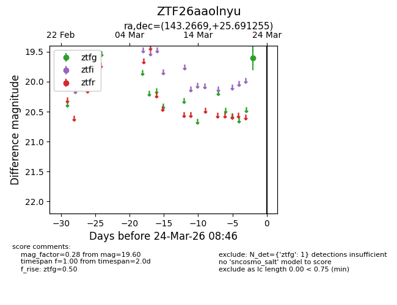
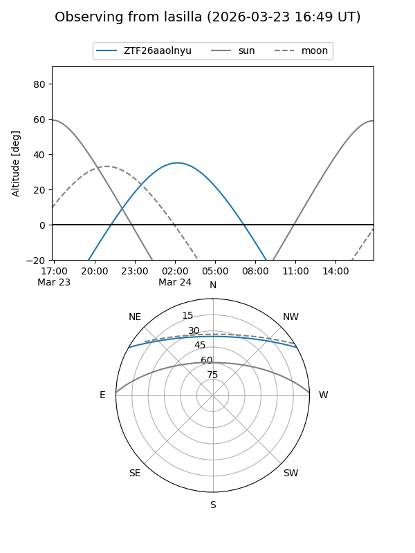
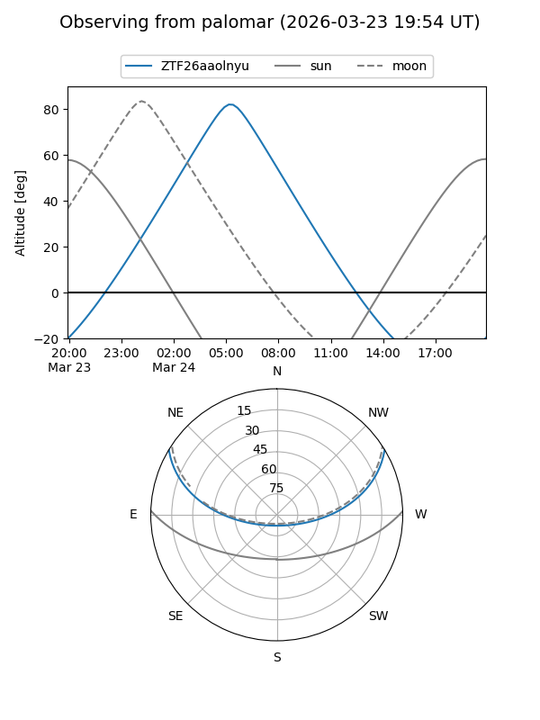

ZTF26aaolnyu
Target ZTF26aaolnyu at 2026-03-24 08:48
Aliases and brokers:
FINK: link
Lasair: link
ALeRCE: link
alt names
ZTF26aaolnyu (ztf,fink_ztf)
Coordinates:
equatorial (ra, dec) = 143.2669,+25.69125
equatorial (HMS+DMS) = 09:33:04.06,+25:41:28.52
galactic (l, b) = (203.0551,+45.85295)
Flags:
Photometry:
last ztfg=19.60
1 ztfg detections
Lightcurve

Visibility


Additional plots